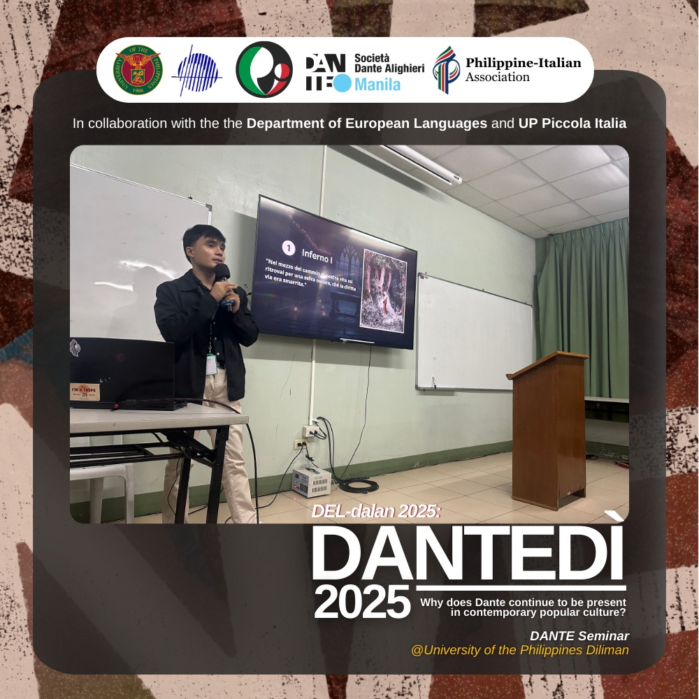

Biblioteca di Aljohn
Il quaderno italiano di Aljohn
L’italiano ha smesso di essere soltanto una lingua studiata da solo quando sono entrato nella vita culturale che la circonda: il mio tirocinio alla Philippine Italian Association, una lezione per il Dantedì e le tavole di conversazione di Dante Manila.
Questa pagina tiene insieme le mie conversazioni, le voci che seguo davvero e i luoghi filippini dove l’italiano è diventato incontro.

1 di 3
Archivio personale · in prima persona
Qui ci sono i miei video, separati dalla biblioteca degli altri creator. Scegli un episodio: il lettore e il contesto cambiano insieme.
Indice dei video
Metodo audio
Una serie audio per seguire la logica dell’italiano con calma: ascolta una traccia, rispondi ad alta voce e lascia che ogni passaggio costruisca il successivo.
Apri la serie su SoundCloudPratica mirata
Per una sessione breve e concentrata, Linguno aiuta a lavorare sulle coniugazioni italiane con quiz mirati. È un complemento pratico tra un momento di ascolto e una conversazione.
Scegli un tempo, un gruppo di verbi e un livello di difficoltà: dieci minuti bastano per individuare le forme che hanno ancora bisogno di attenzione.
Pratica l’italianoUn esercizio alla volta, con un obiettivo chiaro.
Interviste, psicologia, scienza, basket e cultura digitale: cinque formati nativi per scegliere non soltanto che cosa ascoltare, ma quanto ritmo e densità affrontare.
Biblioteca curata · altre voci
Persone e redazioni che ricorrono davvero nei miei ascolti: accenti, conversazioni, musica, curiosità e comicità da ritrovare quando voglio rientrare nell’italiano.
Livello CEFR
Nessuna voce corrisponde a questa ricerca.
Pinocchio offre il primo passo; Dante, Manzoni e Machiavelli chiedono un ascolto interiore più lento. Le stesse edizioni e copertine continuano nella biblioteca generale.
Una finestra sulla TV italiana
RaiPlay riunisce dirette, replay, serie, film, documentari, concerti e contenuti didattici. Per chi studia fuori dall’Italia è preziosa, ma non tutto viaggia: le dirette, salvo RaiNews24, e parte del catalogo dipendono dai diritti disponibili nel proprio Paese.
Apri RaiPlayPersone, gruppi, luoghi
Una chat diventata meetup, un tirocinio diventato Dantedì e tavole di conversazione dove l’italiano ha preso una voce collettiva.
I ristoranti che compaiono nei miei video e nelle conversazioni della comunità: apri una scheda per ritrovare l’indirizzo, i contatti e l’episodio collegato.
Una raccolta ancora viva
Questa raccolta cresce con le voci che ascolto, le conversazioni che mi restano e gli incontri che cambiano il modo in cui uso la lingua.
Continua sul mio canale